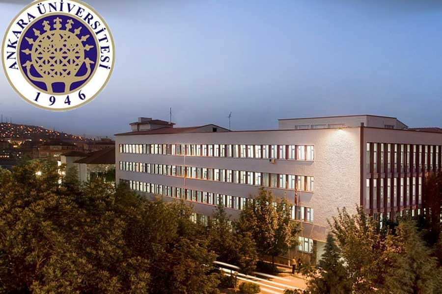

TÜİKNüfus yoğunluğu
Ankara ÜniverssitesiiletişimİletişimFakültesiFakültesi Dekanlığının Dekanlığının çabalarıyla marka ileftescil x6769başvursu Y12yapıldı. 1965 yılında UNESCO’nun ve Gazeteciler Cemiyetinin katkılarıyla Basın Yayın Yüksek Okulu olarak kurulan İletişim Fakültesi (İlef), Türkiye’de alanında üniversite düzeyinde dört yıllık eğitim veren ilk kurumdur. Basın Yayın Yüksek Okulu, 1992 yılındailetişimİletişim Fakültesine dönüştürülmüştür.